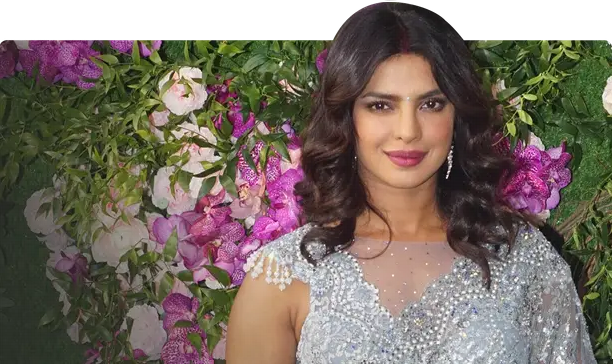
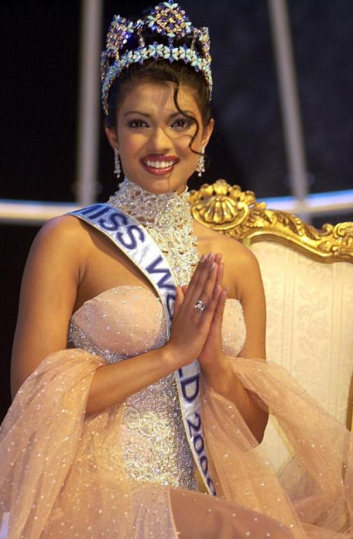

A Tribute to Priyanka Chopra Jonas
"The winner of the Miss World 2000 pageant"
About the Legend
☛ Priyanka Chopra Jonas (born 18 July 1982)is an Indian actress and producer
☛ The winner of the Miss World 2000 pageant, Chopra is one of India's highest-paid actresses and has received numerous accolades, including two National Film Awards and five Filmfare Awards.

☛ She has worked with UNICEF since 2006 and was appointed as the national and global UNICEF Goodwill Ambassador for child rights in 2010 and 2016, respectively.
☛ In 2016, the Government of India honoured her with the Padma Shri, and Time named her one of the 100 most influential people in the world.In the next two years, Forbes listed her among the World's 100 Most Powerful Women, and in 2022, she was named in the BBC 100 Women list.
☛ Chopra ventured into music by releasing three singles and into writing with her memoir Unfinished (2021), which reached The New York Times Best Seller list. Her other ventures include tech investments, a haircare brand, a restaurant, and a homeware line.
☛ She promotes social causes such as environment and women's rights and is vocal about gender equality, the gender pay gap, and feminism.
☛ Chopra supports various causes through her foundation "The Priyanka Chopra Foundation for Health and Education", which works towards providing support to unprivileged children across the country in the areas of Education and Health.
☛ She donates ten percent of her earnings to fund the foundation's operations, and pays for educational and medical expenses for seventy children in India, fifty among whom are girls.
☛ Her namesake foundation for health and education works towards providing support to underprivileged Indian children. Despite maintaining privacy, Chopra's off-screen life.
☛ In late April 2021, due to the COVID-19 pandemic in India, Chopra along with husband Nick opened a fundraiser along with NGO GiveIndia to get donations for oxygen supply, COVID-19 care centers, testing, and vaccination efforts. The fundraiser had achieved USD 400,000 in the first few days.
☛ Chopra's brother-in-law Kevin Jonas also urged his followers to help donate to the fundraiser.By 13 May 2021, the fundraiser had achieved the $1 million landmark and put its newer target at $3 million for COVID-19 relief.
☛ The company signed Priyanka Chopra as it brand ambassador for LYF smartphones in 2016.
☛ Italian luxury brand Bvlgari on Monday said it has appointed actor Priyanka Chopra Jonas as global brand ambassador.
☛ Priyanka Chopra's company 'Anomaly Haircare' has the second-highest revenue of any celebrity brand, with £429.9 million. Priyanka Chopra Owns Second Wealthiest Beauty Brand of 2023, Beats Kylie Jenner And Selena Gomez.
☛ Priyanka Chopra is an actress, humanitarian, model, producer, and former pageant queen with an impressive estimated net worth of $20 million.